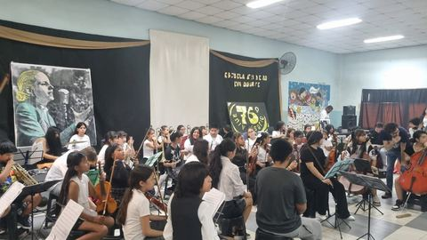
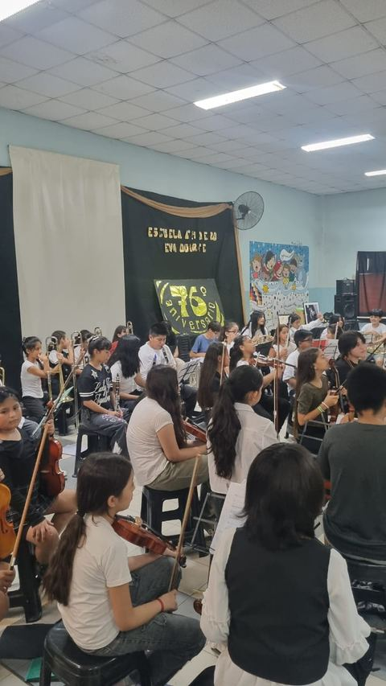
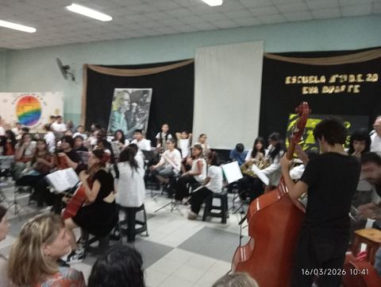

Escuela Nº 19 Eva Duarte • Un concierto que quedó en la memoria de la escuela
La última presentación de la orquesta reunió a chicos y chicas, familias, docentes y vecinos en una jornada muy especial dentro de la Escuela Nº 19 D.E. 20 Eva Duarte. La música volvió a ocupar un lugar central en la vida de la escuela y del barrio, con los alumnos de la orquesta como protagonistas de un encuentro profundamente comunitario.
Para la orquesta tuvo además un valor muy propio: no fue tocar en cualquier escenario, sino hacerlo en la misma escuela donde ensaya, aprende y crece cada semana. Esa cercanía entre concierto, escuela y comunidad hizo que el momento se viviera con mucha pertenencia y emoción.
Ahora ese concierto ya forma parte del historial del sitio y puede recorrerse con nuevas fotos del evento, una crónica del día y accesos a los canales donde se seguirán anunciando próximas actividades.



Seguimos sumando al historial
El concierto de la Escuela Nº 19 Eva Duarte ya se encuentra incorporado a la sección de conciertos, junto con el resto del recorrido de la orquesta.
- Fecha del evento: marzo de 2026
- Lugar: Escuela Nº 19 D.E. 20 Eva Duarte
- Dirección: Cosquín 3100, Mataderos
La actividad sigue cada semana
Aunque todavía no hay nuevas fechas públicas confirmadas, la orquesta sigue activa y ensayando. Los chicos y chicas continúan trabajando repertorio, técnica, escucha grupal y preparación musical junto a sus profes.
Escuela Nº 19 Eva Duarte — Los Perales, Mataderos
La escuela sigue siendo casa, punto de encuentro y espacio de aprendizaje para la orquesta.
- Martes, miércoles y jueves: 16:30 a 18:30 hs
- Sábados: 14:00 a 17:45 hs
- Actividades: instrumento, lenguaje musical, ensayos y trabajo colectivo
Las nuevas fechas se anunciarán por estos canales
Novedades rápidas, registros del día a día y avisos de conciertos, encuentros y actividades.
YouTube
Videos y registros que ayudan a mostrar el trabajo musical de la orquesta y su recorrido.
Escuela y comunidad
La información también circula en la escuela, entre las familias y en el propio barrio.

Chicos y chicas en el centro del proyecto
La orquesta se sostiene en torno a la participación de los niños, niñas y jóvenes que cada semana vuelven a encontrarse con sus instrumentos, con sus profes y con sus compañeros. Ellos y ellas son el corazón de este proyecto.
A su alrededor hay una red que acompaña: familias, docentes, auxiliares, escuela, barrio y comunidad. Ese entramado es el que hace posible que la orquesta no sea solo una actividad, sino una experiencia de pertenencia y crecimiento.
Por eso este sitio sigue activo aun cuando no haya fechas nuevas definidas: porque el trabajo continúa y porque cada ensayo también forma parte de la historia de la orquesta.
Recorré el historial
La sección de conciertos sigue creciendo con fotos, crónicas y registros de los momentos más importantes de la orquesta.
Ir a conciertosDifundí la orquesta
Compartir el sitio, el Instagram y el canal de YouTube ayuda a que más vecinos conozcan el trabajo de los chicos y chicas y acompañen a la orquesta.
Seguir en Instagram¿Querés participar?
Los niños y niñas que quieran acercarse a la orquesta pueden consultar por Instagram o directamente en la escuela durante los días de ensayo.
Ver información generalLa música sigue haciendo comunidad
La orquesta continúa creciendo gracias a un esfuerzo compartido que vale la pena sostener. Lo que los profes y los chicos construyen cada semana necesita del acompañamiento de toda la comunidad.
Seguimos ensayando, aprendiendo y preparando lo que viene. Y cuando haya nuevas fechas, este sitio y sus canales las van a anunciar.